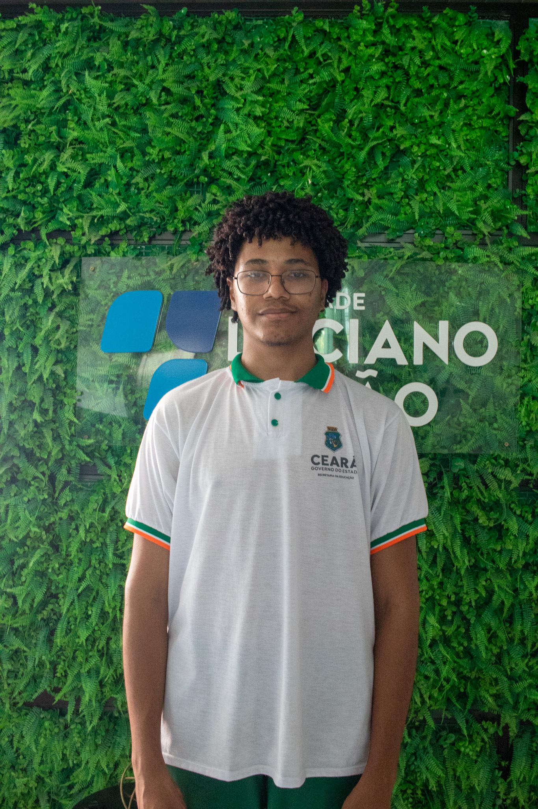

Pedro apoia na criação de peças visuais, desenvolvendo projetos gráficos e ajudando a transformar ideias em comunicações visuais atrativas e eficazes.
Pedro atua como estagiário na área de Design, contribuindo para a criação de materiais visuais e estratégias de comunicação da empresa. É responsável por desenvolver posts para redes sociais, peças gráficas e layouts digitais que reforçam a identidade visual da marca. Com criatividade e atenção aos detalhes, utiliza ferramentas como Canva, Photoshop e Illustrator para transformar ideias em projetos visuais atraentes e funcionais. Sempre em busca de aprimoramento, Pedro se destaca pela originalidade e pelo compromisso em entregar resultados que unem estética e propósito.